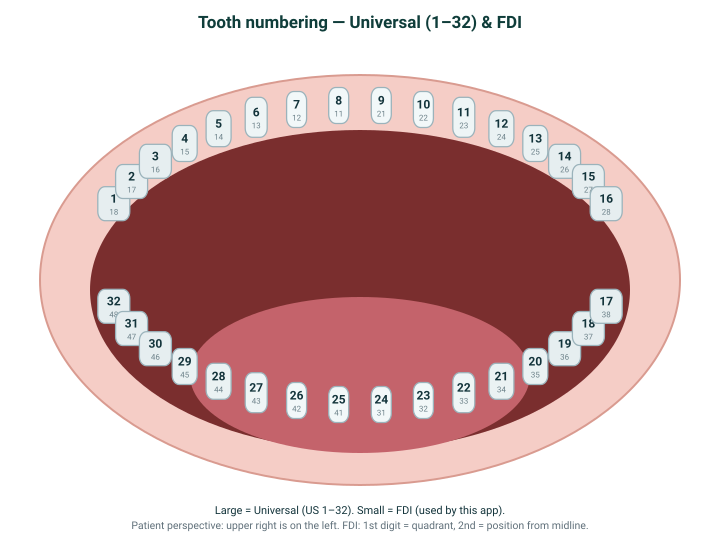

Plan your aligners, step by step
Educational only — this does not diagnose, prescribe, or say whether treatment is safe or complete.
- 1 Upload
- 2 Teeth & time
- 3 Details
- 4 Review
- 5 3D preview
- 6 Print / send
1 · Upload your STL files
STL (STereoLithography) files are the detailed 3D scan models of your teeth. Add your upper and/or lower scans.
2 · Which teeth move, and how long
What is a stage? A stage is one aligner tray — a single step in the sequence. Each tray nudges your teeth a little, and you wear it for the number of days you choose before swapping to the next one. More movement needed means more stages, which means more trays and more total time.
"Build my plan" turns your scan into a step-by-step sequence of small tooth movements (the aligner stages). You can then review it, preview it in 3D, and export the print files.
These are the teeth the plan moves. Uncheck any you'd like to keep still — or click it directly in the 3D view below.
Held-still teeth show in blue-grey. The 3D view appears once you've loaded a scan and built your plan.
How long should each tray be worn?
Other pacing options
3 · Small details (optional)
Make the on-screen movement easier to see — this only changes the preview, not the plan.
Real aligners move teeth a fraction of a millimeter per stage — too small to see on screen. This slider multiplies the movement in the 3D preview only, so you can actually watch it (×12 means shown twelve times larger than reality). Your saved plan and print files always use the true, un-exaggerated values.
Drag the scale slider above and watch the teeth in the 3D view move more or less. Movement shown is simulated.
Want fine control — per-tooth movement caps, attachments, IPR, and the raw plan JSON? Switch to the Technician view with the toggle in the sidebar.
4 · Review your plan
The headline below is the key result — how many trays, and how long overall. The details follow.
Ask AI about your plan
Ask anything about this preview in plain language. Answers are educational only.
5 · See the full 3D plan
A stage is one aligner tray — a single step in the sequence. Stage 0 is your starting position; each later stage nudges the teeth a little closer to the goal, and you would wear that tray for the number of days you chose before moving to the next. Drag the stage slider to watch the planned movement tray by tray.
6 · Print or send your files
Build the 3D-print files (one model per stage, plus a manifest). Download the zip to print the trays, or download the email draft to send the files to yourself or a print service.
The email draft opens in your mail app with the files already attached. Printing, materials, post-processing, and any physical use are your own responsibility and risk.
Upload STL
Add upper, lower, or both STL scans.
Getting Started
- Upload STL scans here, or use the Sample Test Case button in the sidebar for the built-in example.
- Confirm units before relying on millimeter movement checks.
- Review findings and data gaps before exporting anything.
Data Availability
Mark the records you actually have.
Step 2: Declare Records
Missing records limit what the engine can check and drive acquisition guidance.
Movement Settings
Set caps and export metadata.
Step 3: Set Review Rules
Caps and clinical controls shape warnings; they do not approve treatment.
Print Export
Clinical Controls
Clinical controls are planning metadata. They help the engine flag conflicts; they do not predict biological response or aligner tracking.
Stage Builder
FDI tooth IDs, millimeters, and degrees.
Step 4: Build The Timeline
Each row is one tooth movement at one stage. Use small increments, then review the cumulative sequence with the stage slider.
| Stage | Tooth | X mm | Y mm | Z mm | Tip | Torque | Rotation |
|---|
Progress Preview
Step 5: Review The Progression
A stage is one aligner tray — a single step in the sequence (stage 0 is the starting position). Use the view buttons and stage slider to inspect the current, planned, or overlay preview at each stage.
STL scans render as scan geometry. Stage movement is schematic unless segmented per-tooth render meshes are available. The exaggeration factor only makes sub-mm movement visible.
Manual target
No tooth selected.
Authors crown translation only (no rotation, no vertical movement) in scan-local axes. This is a geometric target, not a treatment goal or approval. Generate Plan splits it into cap-respecting stages.
Tooth Map & Numbering
How teeth are numbered here. Educational only; not a diagnosis.
Two ways to number teeth
Adults have 32 teeth, and dentists give each one a number so everyone is talking about the same tooth. There are two common numbering systems, so the chart below shows both:
- FDI (two-digit) — used by most of the world and by this app internally. The first digit is the quadrant (1 upper-right, 2 upper-left, 3 lower-left, 4 lower-right); the second is the position counting out from the front midline (1 central incisor → 8 third molar). Example: 11 = upper-right central incisor, 46 = lower-right first molar.
- Universal (1–32) — the chart most common in the US. It simply counts every tooth in order, starting at the upper-right wisdom tooth (1), across the top to the upper-left wisdom tooth (16), then down and back across the bottom (17–32).
Why two? They grew up in different places — FDI is the international standard, Universal is the long-standing US habit — and both are still in everyday use. They describe the exact same teeth; only the labels differ. This app speaks FDI and shows Universal alongside it so the chart is readable either way.

Q1 · Upper right
- 11 central incisor
- 12 lateral incisor
- 13 canine
- 14 first premolar
- 15 second premolar
- 16 first molar
- 17 second molar
- 18 third molar
Q2 · Upper left
- 21 central incisor
- 22 lateral incisor
- 23 canine
- 24 first premolar
- 25 second premolar
- 26 first molar
- 27 second molar
- 28 third molar
Q4 · Lower right
- 41 central incisor
- 42 lateral incisor
- 43 canine
- 44 first premolar
- 45 second premolar
- 46 first molar
- 47 second molar
- 48 third molar
Q3 · Lower left
- 31 central incisor
- 32 lateral incisor
- 33 canine
- 34 first premolar
- 35 second premolar
- 36 first molar
- 37 second molar
- 38 third molar
Glossary — Key Terms
Plain-language definitions for people new to dentistry.
Key Terms (A–Z)
No terms match your search.
- Arch
- One jaw's row of teeth: maxillary (upper) or mandibular (lower).
- Attachment
- A small composite bump bonded to a tooth so an aligner can grip and move it. Planning intent only.
- Crowding
- Too little space, so teeth overlap or twist.
- Data gap
- A missing record (roots, CBCT, occlusion…) that limits what the engine can assess.
- Extrusion / Intrusion
- Moving a tooth out of (extrusion) or into (intrusion) the bone vertically.
- Finding
- A structured, controlled-vocabulary observation from a rule or a linted advisory. Never an approval.
- Fixed tooth
- A tooth intended to stay still; the generator will not move it.
- IPR
- Interproximal reduction: removing a sliver of enamel between two teeth to create space (in mm).
- Malocclusion
- A "bad bite": teeth that do not meet/align as intended. The app does not diagnose this.
- Movement cap
- The maximum per-stage movement treated as a review threshold (linear, vertical, angular, rotation).
- Occlusion
- How upper and lower teeth meet when biting.
- Rotation
- Turning a tooth around its own long axis.
- Segmentation
- Splitting a whole-arch scan into individual per-tooth meshes. Needed to move teeth individually.
- Stage
- One step of an aligner sequence, holding per-tooth movement values.
- Tip / Torque
- Tip = tilting along the arch; torque = tilting the crown in/out.
- Units
- The real-world scale of a scan (mm, cm…); confirm before millimeter checks run.
- Wear interval
- How many days each aligner stage is worn; sets the projected (not promised) duration.
Full glossary, the FDI↔Universal↔Palmer table, and the tooth-map diagram live in docs/GLOSSARY.md.
Imaging & Photos Guide
A quick guide to the records you can bring and how much each one helps. Educational only, this is not a diagnosis and it does not tell you what care you need.
What the engine actually uses
The planner works on the crown-surface geometry of an intraoral Stereolithography file format (STL) scan: it segments the arch into per-tooth meshes and proposes movement. It never sees roots, bone, nerves, or the airway, so extra imaging mostly closes data gaps (see Data Gaps and Acquire Next in the sidebar) rather than changing the core plan. X-rays and CBCT are ionizing radiation and are ordered and interpreted by a licensed professional.
What is the “Rx” file?
A scanner export (for example an iTero OrthoCAD zip) usually bundles an Rx alongside the meshes — an HTML, PDF, or XML document. The Rx is the scan’s prescription / order form: it records the procedure type, the ordering dentist, the scan date, and any clinical notes or requested treatment. It is not part of the STL and carries no 3D geometry, so the engine does not plan from it.
It is still useful context: it tells you what was ordered, by whom, and when, which is worth reading before you trust a plan or compare it against a provider’s recommendation. Treat it as paperwork that travels with the scan, not as a measurement input. The intraoral gallery photos in the same export behave like STL + Photos above — bite and soft-tissue context, no new measurements.
| Input | Helps | What it adds | Rough cost (USD) |
|---|---|---|---|
| CBCT (DICOM) | 10/10 | A full 3D scan of crowns, roots, and bone (and airway). The only input that reveals what is under the gum, so it removes the most data gaps. | ~$100–$400 (often bundled with a consult). Higher radiation; clinician-ordered. |
| STL + Periapical X-rays | 8/10 | Crown surface plus close-up 2D views of specific roots and surrounding bone — targeted root context where it matters. | STL ~$0–$150 + ~$25–$50 per film (full-mouth series ~$100–$200). |
| STL + Panoramic X-ray | 7/10 | Crown surface plus a single 2D whole-jaw overview of roots, eruption, and obvious anomalies. | STL ~$0–$150 + panoramic ~$60–$150. |
| STL + Photos | 6/10 | Crown surface plus bite and soft-tissue context and a visual baseline to track change against. No new 3D measurements. | STL ~$0–$150 + photos ~$0 (smartphone). |
| STL only | 5/10 | The core input: the crown-surface mesh the engine segments and moves. No roots or bone, so root-dependent limits stay unknown. | ~$0 with your own scanner; ~$50–$150 at an office (or from impressions). |
| Panoramic X-ray only | 5/10 | A whole-jaw overview, but no 3D crown surface for the engine to plan movement on. | ~$60–$150. |
| Photos only | 3/10 | Helpful visual context and progress tracking, but no measurable geometry to plan from. | ~$0 (smartphone). |
If you are starting from scratch
An intraoral STL scan is the one record that unlocks the planner — start there. After that:
- Add smartphone photos for free to capture your bite and a baseline.
- Bring an X-ray or CBCT only when a licensed professional recommends one; those reveal roots and bone the surface scan cannot, and they involve radiation.
Costs are rough US estimates and vary widely by region, provider, and whether imaging is bundled with a visit. The relative-value scores describe how much each input helps this engine close data gaps — they are not medical advice and do not rank treatments.